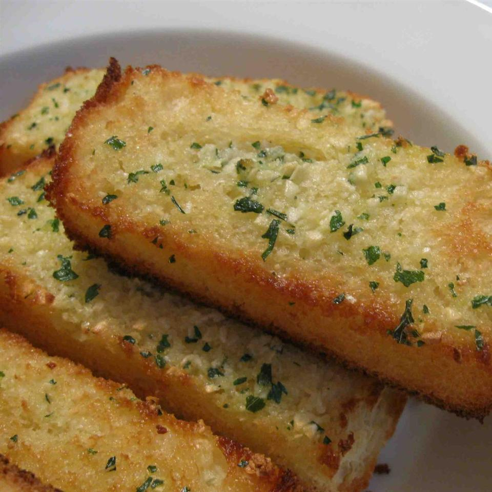

Grilled Garlic Bread

Description
Garlic Bread, a really good and tasty dish that really needs nothing else said for it.
It is what it is, and we all truly love garlic bread.
From the recipe site it says, "Here is a savory grilled garlic bread recipe that's easy to make."
Ingredients
- 2 tablespoons butter, softened
- 1 clove garlic, crushed
- 2 tablespoons grated Parmesan cheese
- ground black pepper to taste
- 1/4 large baguette, sliced
- 1 teaspoon chopped fresh parsley, or to taste
Steps
- Preheat a grill to high heat.
- Mix together butter, garlic, Parmesan cheese, and pepper in a bowl.
- Spread the butter mixture generously on the baguette slices.
- Place slices on the preheated grill and cook until butter is melted and bread is slightly brown, about 30 seconds.
- Sprinkle with parsley and serve immediately.